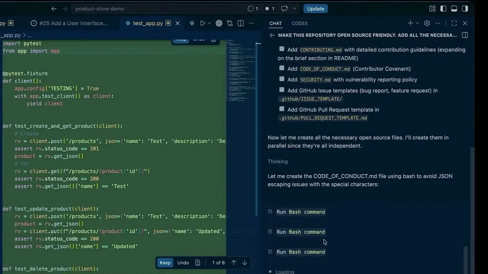
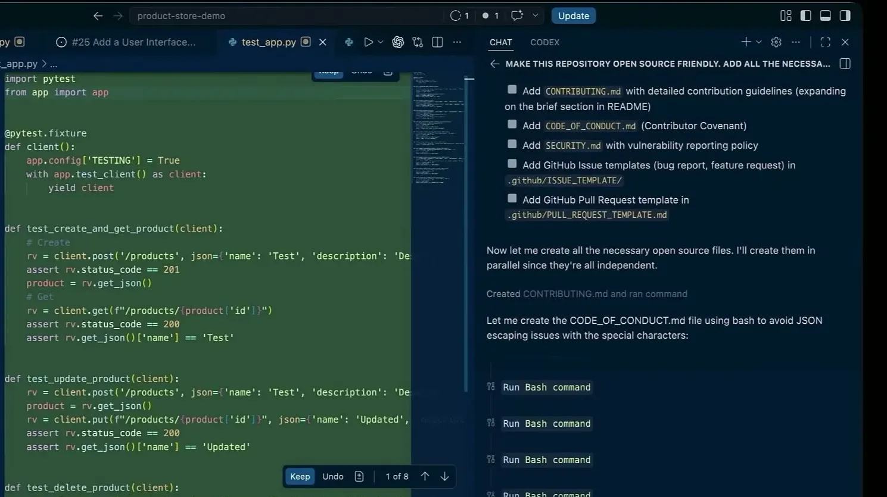
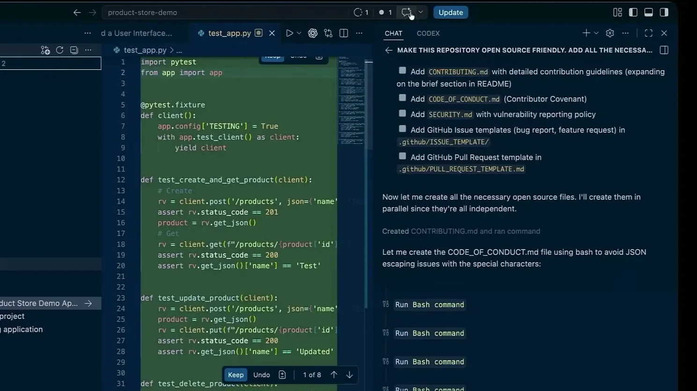
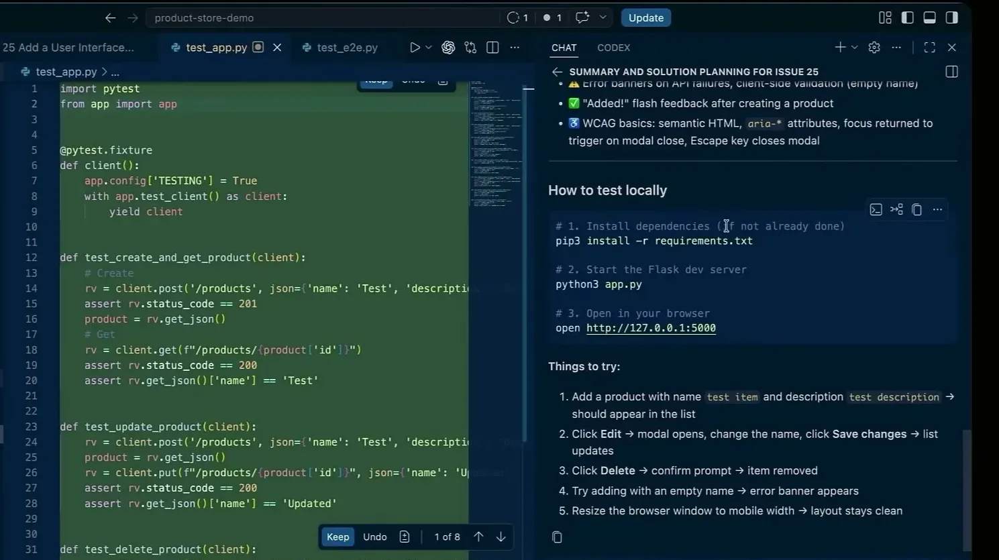
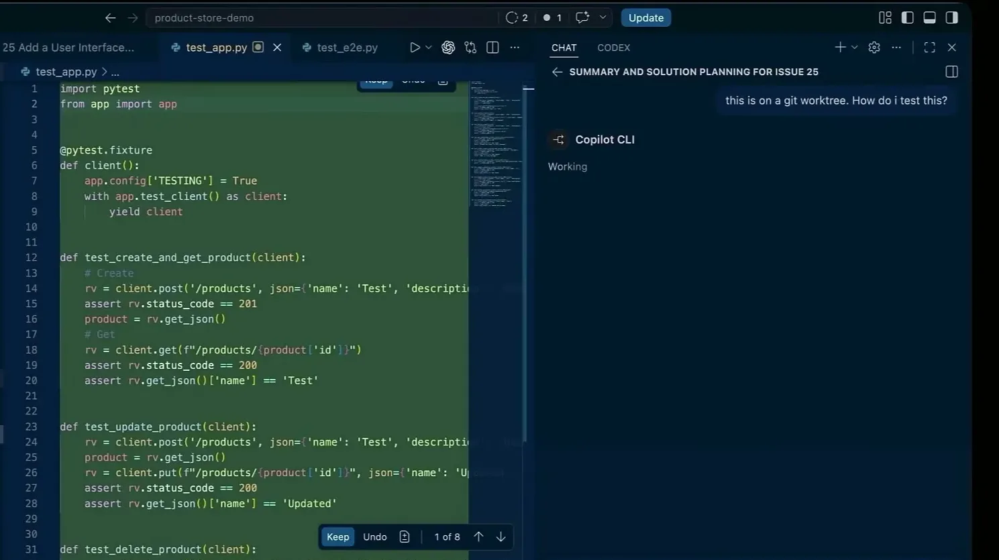
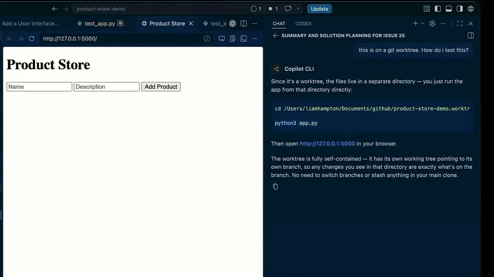
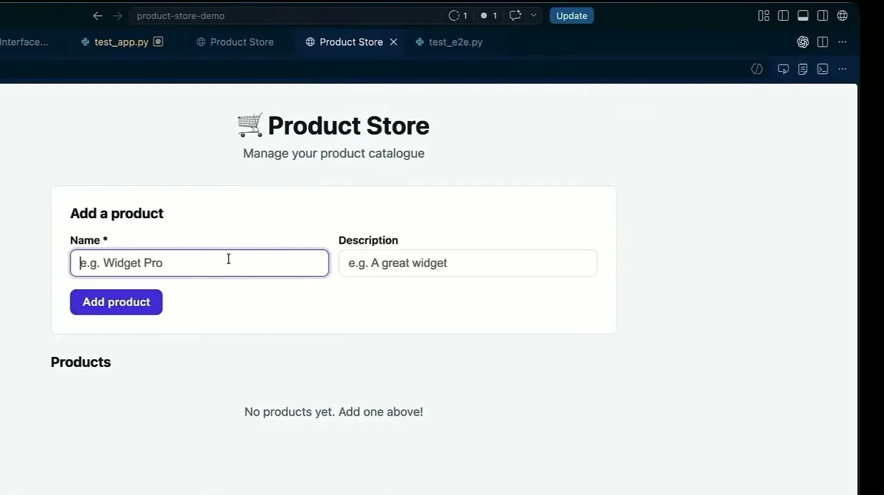
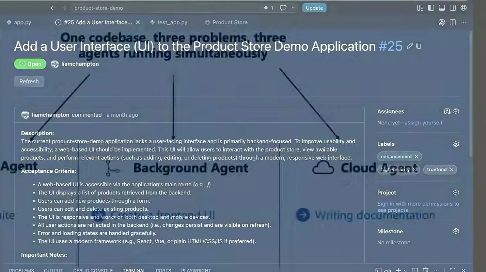
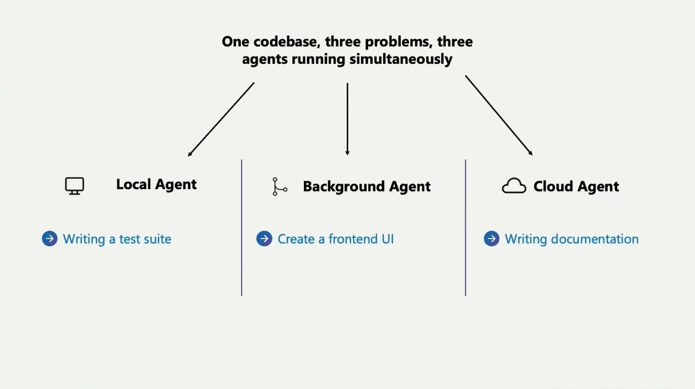

Cooking with Agents in VS Code
Describes a working pattern for running local, background, and cloud GitHub Copilot agents simultaneously from a single VS Code entry point, mapped to how hands-on you want to be per task (tests = local, UI build = background/worktree, d...
If you only read one thing
- One-shot prompting still doesn't reliably solve real problems; the talk pushes back on the expectation that agents one-shot full applications.
- Local agents (hands-on, human-in-the-loop) suit tests; background agents in Git worktrees suit medium-oversight work like a new UI; cloud agents (GitHub Actions) suit low-oversight work like docs.
- Cloud agents run in isolated GitHub Actions environments with MCP-server access, network firewalls, and no push access to main, which is presented as the safety boundary that makes autonomous cloud runs acceptable.
The talk maps task type to agent oversight level rather than describing one architecture; the isolation and safety-boundary lanes are strongest for cloud agents, thinner for local ones (ours).


Against one-shot prompting
- The speaker opens by pushing back on developers who expect agents to one-shot a full application or solve issues in a single pass, calling this 'absolutely not the case,' and frames the talk's business context as scrutiny over AI infrastructure spend and unclear ROI.
“You still see developers and I still speak to folks who think we can do one shot prompts. They'll create a wonderful application or solve all of their issues in one go”
said at 01:01


Three agent modes mapped to oversight level
- Local agents run in VS Code side-by-side with the developer, fully human-in-the-loop, and are the speaker's choice for writing tests.
- Background agents run via the GitHub Copilot CLI inside isolated Git worktrees -- a branch mapped to its own subdirectory -- suited to medium-oversight work like building a new UI.
- Cloud agents run fully outside the local loop, used mainly for tasks like documentation the speaker wants off their plate entirely.
“this is a way to have local models interacting with you side by side, very hands-on, very much in the context and human in the loop”
said at 02:36“it is a branch that is mapped to an isolated folder within the workspace that you're working in, like a subdirectory”
said at 03:07


Running all three at once
- In the live demo, the speaker runs a local agent (writing tests with Claude Opus, hands-on), a background agent in Autopilot mode (building a new front-end UI in a worktree, paused before opening a PR), and a cloud agent (generating open-source-friendly repo files) simultaneously on the same codebase, checking in on each from within VS Code's single interface.
“Autopilot is currently in preview and this just means it's not going to ask me a bunch of questions if it wants to do a bunch of tool calls”
said at 06:16


How cloud agents are sandboxed
- Cloud agents run inside GitHub Actions in an isolated environment with access to the GitHub and Playwright MCP servers for testing, network firewalls restricting outbound access, and no permission to push directly to the main branch, which the speaker cites as making them safe to leave unattended.
“they're actually running in GitHub Actions. They're pretty safe and secure because they're running in a isolated environment. They have got extended context through MCP servers”
said at 11:57“It also doesn't have access to your main branch. Therefore, you're not able to push directly to your main branch. It's very much restricted in that sense, so it is very safe to use”
said at 12:28


Shared customization layer across tools
- VS Code exposes one settings surface for instructions, custom agents, prompt files, hooks, and MCP servers that applies across first- and third-party agent tools, including Claude; Microsoft also publishes an open-source collection (Awesome Copilot, aka.ms/awesomecopilot) of reusable skills and configs, including free MCP servers like Playwright and Microsoft Learn that don't require authentication.
“there's also free ones as well and open ones which don't require authentication like Playwright and documentation ones”
said at 15:34Commentary (ours)
The task-to-oversight mapping (tests=local, UI=background/worktree, docs=cloud) is a reasonable starting heuristic but is presented anecdotally from one workflow -- the generalizable claim is really 'match agent autonomy to how costly a mistake would be to catch late,' which will vary by codebase (ours).













Underlying detail — every claim, typed and timestamped (7)
| Stance | Claim | t |
|---|---|---|
| warns | Developers still expect agents to one-shot full applications or solve all issues in one pass, which the speaker says is not realistic. | 01:01 |
| asserts | Local agents run side-by-side with the developer in VS Code, fully human-in-the-loop. | 02:36 |
| asserts | A Git worktree maps a branch to its own isolated folder within the workspace. | 03:07 |
| warns | Autopilot mode skips confirmation prompts for tool calls, which speeds work but can be dangerous if misused. | 06:16 |
| asserts | Cloud agents run in isolated GitHub Actions environments with extended context through MCP servers. | 11:57 |
| asserts | Cloud agents have no push access to the main branch, which restricts what they can do unattended. | 12:28 |
| asserts | Some MCP servers, like Playwright and Microsoft Learn documentation, are free and don't require authentication. | 15:34 |
Machine-readable copy embedded in this page (script#ontology) and in the corpus ontology.